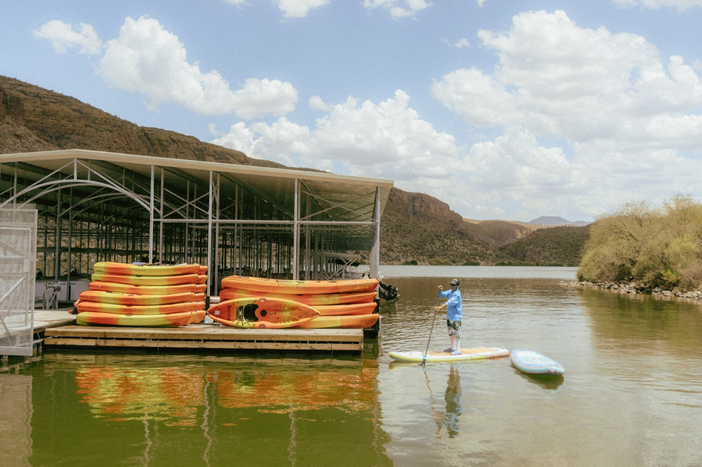

The Scenery
See It for Yourself
Photos never quite capture it. But you'll get the idea.



A 950-acre reservoir carved into the Superstition Mountains. Canyon walls rise straight out of the water, the scenery is genuinely wild, and most people in Phoenix have no idea it exists.
Canyon Lake sits inside the Superstition Wilderness — a 950-acre reservoir hemmed in by sheer desert canyon walls that rise straight out of the water. It's one of those places that stops people mid-stroke. You look up, you look around, and you just kind of forget you were ever stressed about anything.
We launch out of Canyon Lake Marina, the main hub on the lake. From there you can hug the canyon walls, drift into quiet coves, watch for bighorn sheep on the ridgelines, and on guided tours, reach corners of the lake most people never find on their own.
Heads up: cell service is gone before you reach the marina. Book online in advance, screenshot your directions, and arrive ready to have a great time.
Sheer canyon walls on all sides — the scenery earns its reputation.
Bighorn sheep, bald eagles, great blue herons, and deer on the regular.
Temps are perfect. Summer works too — hit the water early and beat the heat.
Bass, catfish, crappie, and carp. Bring a rod if that's your thing.
Photos never quite capture it. But you'll get the idea.
About 45 minutes east of Phoenix on the Apache Trail (AZ-88). It's one of Arizona's most scenic drives — leave a few minutes early and enjoy it.
Interactive map — Google Maps embed goes here
Open in Google MapsWe handle the gear. Just pack these and you're good.
The Arizona sun on open water hits different. Reef-safe, apply before you launch, reapply on the water.
Bring more than you think. It's hot, it's dry, and there's nothing to buy once you're on the water.
Strapped sandals or water shoes. Flip-flops end up in the lake — leave them in the car.
Polarized shades cut the glare beautifully out there. Wide brim hat — you'll thank yourself.
You will get wet. Board shorts and a rash guard are ideal. Leave the jeans in the car.
Signal dies on the way in. Screenshot the route or save it offline before you leave home.
We take both. Cash gets you a small discount — use code YNSCASH. Book online to skip the line entirely.
Everything else — paddle, life jacket, safety briefing — we've got covered. You just need to get here.